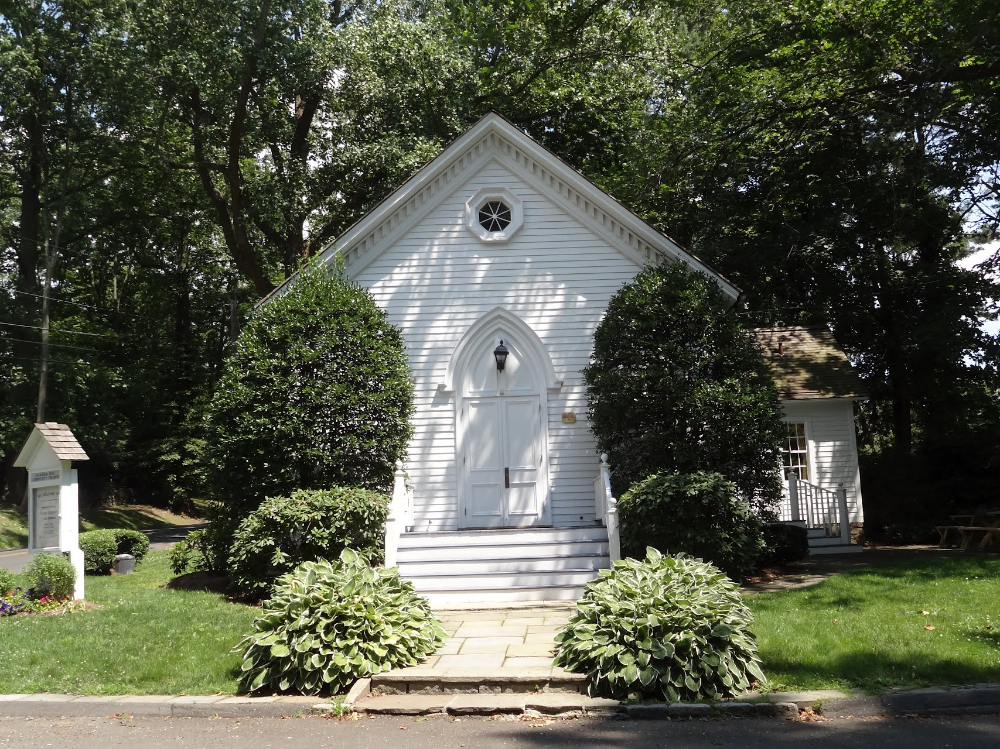

The chapel at Talmadge Hill was built by neighbors out of timbers cut locally from a familiar design for churches of the era. The chapel represents the joint efforts and aspirations of so many of the neighbors. And it has been an active place of worship more and less continuously since it opened its doors in September of 1870.
Minot Kellogg gave the land in 1870, and Noah Weed had been among those instrumental in getting the Chapel built. It was called the Flat Ridge Hill Chapel at first. The railroad from New Canaan to Stamford had just been completed in 1868, raising great hopes for the neighborhood. The station, just down the hill, had nearly been named “Smith Station” for the numerous Smith families living close by, but because William Talmadge had given a considerable amount of land for the project the stop was named for him. The Chapel also later took the name of Talmadge Hill Chapel.
Talmadge Hill Road was known originally as Flat Ridge Hill Road and Talmadge Hill Road was what is now known as Old Stamford Road, which leads up under the railroad bridge enroute to New Canaan. No one seems to know just when or why this change occurred.
Religious activity in the Flat Hill Ridge Road area (now known as Talmadge Hill) was largely confined to services held at private homes and at the schoolhouse in the years just prior to 1870 but as attendance began to increase, the need for providing a regular place of worship was felt. Consequently, the small plot of ground was given by Minot Kellogg for the building site.
The church was begun and completed in the fall of 1870 in a concerted community effort by the residents of the Flat Hill Ridge area with both financial and moral support being given by other Darien and New Canaan citizens. Neighbors contributed funds, their strong arms, timber from the adjoining woods, and even a team of oxen. In addition to Mr. Kellogg, others who were instrumental in establishing the Flat Hill Ridge Chapel, were Mr. and Mrs. Noah Weed, Mr. and Mrs. Thaddeus Hoyt and family, Mrs. Laura Smith, Mr. and Mrs. Charles Buxton (Burtus?) Mrs. Martha Whitney, Mr. and Mrs. John W. Nichols, Mr. and Mrs. Justus Mead, Mr. and Mrs. Theodore Merrill, Mr. and Mrs. I. N. Waterbury, Miss Mary Talmadge, Mr. and Mrs. Warren Samis, Mr. and Mrs. Aaron Jelliff, Mr. and Mrs. Henry Davenport, and Mr. and Mrs. Benjamin Selleck and family.
Sunday school was begun by Mr. Minot Kellogg and then later, Theodore Merrill, who became its superintendent, and it prospered for a number of years. Elijah Bartram served as librarian of the Sunday school. During this period, both prayer meetings and revivals were held. For reasons unknown, the Sunday school was later disbanded and the Chapel closed, but the dates on which theses events occurred, have not come to light. A written history of the church (a three page summary) was prepared and read by Mrs. M. C. Merritt in the New Canaan Congregational Church during its Bicentennial Celebration in 1933, however in it, dates and names are often lacking. It is recorded that the Chapel was reopened for evening services at a later date by Theodore Merrill, but he was forced to give up his efforts some years later due to ill health. In an attempt to keep the Chapel going, a “Christian Endeavor Society” was established and regular meetings were held, but this, too, failed and once again the Chapel was closed.
From its founding in 1870, the Chapel known as the “Flat Ridge Hill Union Christian Society” was the center of the social life of the Community. Since there were few if any automobiles in the county before 1920, there was little opportunity to move about freely. Occasional day trips to visit relatives were made by horse and buggy or a very occasional trip by train for a vacation with relatives at a distance.
For the most part, church activities outside of regular services, involved fund-raising to supplement the regular collections and donations. Entertainment, plays, church suppers and at a later date, a Church Fair brought all ages together.
On the occasion of one evening’s entertainment an ice storm developed. The hills became a glade of ice. Walking down the hills was particularly hazardous for the elderly. Fearing a broken leg, two elderly people sat down on the ice and slid down the hills. Humorous but evidence of “Yankee ingenuity.”
After supper or entertainment considerable fun and rivalry accompanied the “auctioning off” of surplus food. At times one member of a family would be bidding against another member.
For many years ministers from the Methodist and Congregational Churches in New Canaan alternated in supplying the pulpit with the result that little ministerial calling was done. However, when Mrs. Merritt reached home from calling one day, she found a much disgruntled father who was usually of a quite gentle disposition. It developed that “old man Benedict” had called. At first she could not figure out who “old man Benedict” was, but her father revealed that it was the minister, a man in his early forties, who had unfortunately prayed for the “aged saint.” Her father did not consider himself a saint nor, at sixty, did he like to be classified as an angel.
The Chapel was built with logs given by this same “aged saint” and several neighbors. It was built on property given by Mr. Minot Kellogg who lived in the third house north of Jelliff Mill Road on Old Stamford Road, with the stipulation that the property would revert to his heirs if it ceased to be used as a place of worship. Theodore Merrill, whose daughter founded the Merrill Business Schools, although not a minister, would preach to empty seats when services had to be abandoned because “rowdies” from a neighboring town broke up the services. One sage said, “Only a fool would preach to empty benches” but he did not know the reason behind the action. Mr. Merrill was not going to have the Chapel revert to its previous owner.
The doors of the Chapel were about to be closed for the second time when Mr. Clarence Samis promised Mr. Kellogg that if he would give him the keys he would see that the Chapel was never closed as long as he lived. As the years passed, leaders at the Chapel were content “to let sleeping dogs lie” and many did not even know of Mr. Kellogg’s stipulation. Eventually, it seemed to Dr. Merritt and her brother, that the title to the property should be cleared. A bit of research at the Darien Town Hall (Volume 124 Page 583-589), in which the Chapel is located, some ten feet over the boundary line, revealed the Mr. Edwin Bertine, Mrs. Mildred C. Bertine, Mrs. Dorothy H. Lightner, Mr. Clarence Lightner, Mr. Edward H. Hufnagel, Mrs. Cora L. Hufnagel, Mr. Bernard M. Hufnagel, Mrs. Mary Hufnagel, Lucile R. Hufnagel and Mr. Frederick F. Hefnagel, were the heirs or next of kin of Minot C. Kellogg. And, although visiting in the community each summer, they were unaware of the provision of the deed. When approached they said that they would be glad to relinquish any claim and to give a deed free from any restrictions. Being lawyers, they quickly executed the necessary documents on January 26, 1948, so that the church corporation now owns the property, unencumbered.
Among those families who built the Chapel, only three families were still represented in the Chapel by 1973; the Merrill, Nichol, and Waterbury families. Other local names connected with the early days of the Chapel are Jelliff, Bartram, Mead, Hoyt, Weed, Davenport, Waterbury, Shutes, Whitney and Tailor.

Mr. Frank Shutes, the not-to-be-forgotten tall and handsome Marshall of the Memorial Day Parades in New Canaan, was among the Superintendents of the Sunday school, as was Judge Floyd Bartram, Miss Mary A. Nichols, teacher of the district school, Mrs. Margaret Chalmers Merritt, Mr. David Bennett, and Mr. Robert Ogden.The resumption of activity in the Chapel occurred when Clarence Sammis, who later became a trustee of the Chapel, pledged his labors to keep the Chapel open. In spite of there being only one or two others present in the Chapel for services on occasion, Mr. Sammis remained true to his word and kept the Chapel going. Eventually, a Sunday school was again started by Frank Shutes, a resident of Talmadge Hill. Mr. Thomas Rae, father of Thomas and James Rae of Talmadge Hill, followed Mr. Shutes as Superintendent.
In 1904, a summer resident from New York City, David Schuyler Bennett took a lively interest in the affairs of the church and became superintendent of the Sunday school until about 1924. He named a young law student, who was later to become a distinguished judge, Floyd B. Bartram, as associate superintendent. Mr. Bennett is said to have driven around the neighborhood corralling children and transported the children to and from Sunday school. He also persuaded some of the other men of the Chapel to help him pay the cost of hiring ministers to supply the pulpit. An arrangement was made whereby the pastors of the Congregational and Methodist churches took turns preaching on alternate Sundays.
Recently, Mr. Bennett’s granddaughter was married at the church. Her mother recalled that the grandfather, David Schyluer Bennett would hitch up his wagon early Sunday morning and collect the local children for Sunday School, then return home and hitch his team to his buggy and ride up the hill to the Congregational Church for worship. “This was the church for the workers,” she explained. And so it has always been–a church of workers, those who work to build the Kingdom of God.
From about 1909 to 1929, the pastor of the Methodist Church of New Canaan, the Rev. Daniel M. Lewis, held Sunday afternoon services at the Chapel. In 1917, a room was added to the church in which to hold Sunday school classes and also to serve for entertainment and social activities which were becoming more and more necessary as a means of providing revenue for operating expenses.
The Chapel, which had been incorporated about 1904 as the Talmadge Hill Union Chapel Association, was “in a very prosperous condition.” The history of the Chapel since that time has continued to alternate between a series of crises and vigorous efforts that bring at least temporary stability to the church.
In 1917, the annual income of the church was $305.61, and the expenditures were $287.52, leaving a balance of $18.09. In 1930, a contribution of $1000 made possible the enlargement of the Sunday school room to twice its former size.
Under the pastorate of Rev. Edgar M. Brown, in 1933, there was a church membership of nearly fifty with another fifty enrolled in the Sunday school. A Church club known as the Mary A. Nichols Club was formed in 1926, and accomplished much and contributed to the work of the Church. With the contribution of $25 from a friend, the interior of the Chapel was beautifully redecorated by the club. It also sponsored a $1 Endowment Fund, which amounted to $250 in 1933. As that time a substantial library, largely the gift of Miss Amanda P. Weed and sisters, and added to by Mrs. E. A. Burdett and Mrs. John Sterling, was given to the Sunday school. The gift of a bulletin board and two new flags (one U.S. and one Christian) were given by Mr. Clarence M. Sammis and Mrs. Clarence DeForest, Jr., respectively.
Many things were accomplished during the time, including relief of the discomfort during the winter months from a Chapel poorly heated by only a stove. A furnace room was excavated under the Chapel and a large furnace was installed.
Through the years of its trials, the Talmadge Hill Community Church received generous support from the churches of New Canaan and Darien.
In 1968, the Talmadge Hill Community Church did not have a full-time, ordained minister; it was being served by Jerry D. Wilhelm, a young teacher of social studies at Darien High School.
The Rev. Claude Peters served as minister of the church for the next decade or so and became a much beloved figure in town.
Beginning in the 1980s, Rev. Peter Johnson became Pastor of the Church and served until 1995, when he resigned to pursue a lifelong calling to preach/teach at the University level. In February 1994, Pastor Johnson was unable to hold worship services in the Church because the harsh winter wreaked havoc on the building, freezing all the pipes. In March, the Church was chosen be AmeriCares to receive a helping hand under the Homefront Program. Approximately 60 AmeriCares Homefront volunteers from St. Michael’s Church and Community Baptist Church of New Canaan, New Canaan High School students and people from Noroton Presbyterian Church and St. Luke Church of Darien, painted the inside and outside of the Church as well as repairing numerous windows and the altar and installing a storm door on the “Friendship Hall” door. This effort enabled the Church to be reopened for services.
Reverend Michael Zeman became Pastor in November of 1995. His daughter, Jobie Zeman, resumed the Sunday school services, and immediately had 12-14 children attending regularly. Pastor Zeman is an ordained minister in the United Church of Christ and is a certified psychoanalyst and pastoral counselor. He was associate minister at Norfield Church in Weston, CT from 1981 to 1990.
The Rev. Carter Via joined the staff in 2009 on a very part-time basis. Since that time Carter has become increasingly involved in the life and ministry of the church. The Rev. Zeman and Via now work as a team, leading Sunday worship and offering weekly Bible Studies as well as ministering to the spiritual needs of parishioners.
The chapel is located at 870 Hollow Tree Ridge Road, Darien, across the street from the historic Stephen Smith Home. It is at the intersection of Talmadge Hill Road and Hollow Tree Ridge Road in a sylvan setting; when the leaves are on the trees, it is always in the shade. It is somewhat stark and reflects a lovely “Late Gothic Revival” architectural style. It has a gable roof, clapboard siding and with a wood shingle roof. The foundation is of the local stone. The interior has wooden pews with the capacity to seat approximately 100 people. The floors are wide, old pine boards. Town records indicate that the Chapel is 41’x 24’ and a 7’x 10’ entrance area. Additionally, there is a 17’ x 36’ community room that was added to provide for Sunday school and “Fellowship Hour” after services. The building is in excellent condition both inside and out. Services are held every Sunday at 9:00 a.m. and 10:30 a.m. in the fall, winter and spring, and at 9:30 a.m. in the summer. The telephone number at the church is 203-966-2314.